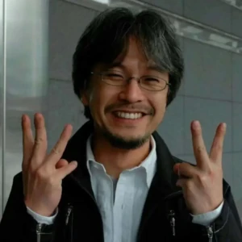

Um pouco dos personagens
Monkey D.Luffy
Monkey D. Luffy, também conhecido como "Luffy do Chapéu de Palha" e comumente como "Chapéu de Palha", é o fundador e capitão dos cada vez mais infames e poderosos Piratas do Chapéu de Palha, bem como o mais poderoso de seus melhores lutadores. Ele deseja encontrar o tesouro lendário deixado para trás pelo falecido Gol D. Roger e assim se tornar o Rei dos Piratas, o que ajudaria a facilitar um sonho desconhecido dele que ele contou apenas para Shanks, seus irmãos e tripulação. Ele acredita que ser o Rei dos Piratas significa ter a maior liberdade do mundo. Nascido na Vila Foosha, Luffy acidentalmente comeu a Gomu Gomu no Mi aos 7 anos de idade, que deu ao seu corpo propriedades de borracha. Nesta época, Luffy conheceu Shanks, "o Ruivo", que lhe deu seu chapéu de palha como parte de uma promessa para que eles se encontrassem novamente. Luffy é o filho do líder Revolucionário Monkey D. Dragon, neto paterno do herói da Marinha Monkey D. Garp, irmão jurado do falecido "Punhos de Fogo" Portgas D. Ace e do chefe de gabinete Revolucionário Sabo, e filho adotivo de Curly Dadan. Ele é uma das poucas pessoas no mundo que carregam a Vontade de D.
Nami
A "Gata Ladra" Nami é a navegadora dos Piratas do Chapéu de Palha. Ela foi o terceiro membro da tripulação e a segunda a entrar, fazendo-o durante o Arco Orange Town. Ela é a irmã adotiva de Nojiko, desde que as duas ficaram órfãs e foram levadas por Bell-mère. Ela era anteriormente membro dos Piratas do Arlong e juntou-se inicialmente aos Chapéus de Palha com a intenção de roubá-los, mas se tornou de fato um dos Chapéus de Palha depois que eles se rebelaram e derrotaram Arlong. Seu sonho é fazer um mapa do mundo inteiro.
Roronoa Zoro
Roronoa Zoro, também conhecido como "Caçador de Piratas" Zoro, é o combatente dos Piratas do Chapéu de Palha e um ex-caçador de recompensas. Ele foi o primeiro membro a juntar-se à tripulação. Sua fama como mestre espadachim e sua grande força, juntamente com as ações de seu capitão, às vezes levaram os outros a acreditar que ele era o verdadeiro capitão da tripulação antes deste obter sua primeira recompensa, enquanto algumas pessoas acreditam que ele seja o imediato. Ele é um dos quatro melhores lutadores da tripulação, ao lado de Luffy, Sanji e Jinbe, e seu sonho é se tornar o maior espadachim do mundo.
Usopp
"God" Usopp é o Atirador dos Piratas do Chapéu de Palha. Ele é o quarto membro da tripulação e o terceiro a entrar, fazendo isso no final do Arco Vila Syrup. Embora ele tenha deixado a tripulação durante o Arco Water 7, ele se juntou novamente ao final do Arco Pós-Enies Lobby. Usopp é o filho de Yasopp. Ele nasceu e foi criado na Vila Syrup, e era o "capitão" dos Piratas Usopp e o amigo mais próximo de Kaya. Após colaborar com os Chapéus de Palha para derrotar Kuro e os Piratas do Gato Preto, ele foi convidado a se juntar à tripulação. Apesar de sua covardia normal, Usopp sonha em se tornar um corajoso guerreiro do mar como seu pai, e vive todos os dias em busca de viver à altura deste sonho.
Sanji
"Perna Preta" Sanji, nascido como Vinsmoke Sanji, e também é o cozinheiro dos Piratas do Chapéu de Palha, assim como um antigo chefe de cozinha do Baratie. Ele também é o terceiro filho e a quarta criança da Família Vinsmoke, tornando-o um príncipe do Reino Germa, até que ele oficialmente os renunciou duas vezes. Apesar de Sanji renunciar ao seu sobrenome Vinsmoke, o Governo Mundial o rotula como parte de seu nome em seu pôster de procurado. Ele é oficialmente o quinto membro da tripulação e o quarto a se juntar, fazendo isso no final do Arco Baratie. Uma vez que ele nasceu no North Blue, ele é o primeiro Chapéu de Palha a não se originar do East Blue.
Criador
Eiichiro Oda , Kumamoto, (1 de janeiro de 1975) é um mangaká, sendo mais conhecido como criador da série One Piece (1997–presente). One Piece é o mangá mais vendido de todos os tempos com 500 milhões de cópias vendidas em todo o mundo, rendendo à Oda o título de um dos autores de ficção mais vendidos. A popularidade da obra resultou em Oda ser nomeado como um dos maiores artistas de todos os tempos que mudou a história dos mangás.
Review do live action
Assim como água é mole e pedra é dura, para todos os efeitos, produções live-action ocidentais de anime são ruins. Logo, quando uma série de One Piece pelas mãos da Netflix foi anunciada, a primeira reação geral do público apaixonado pela obra original foi de desconfiança, afinal, o retrospecto do formato de mídia não era positivo – e muito menos da plataforma que, pouco tempo antes, havia entregado a polêmica e desajeitada série de Cowboy Bebop. Isso posto, graças ao Deus Enel e todos seus apóstolos, a série de One Piece remou na direção contrária do esperado e conquistou seu lugar ao sol na ilha das boas adaptações. Os obstáculos para tal feito eram inúmeros. Desde a teatralidade cartunesca característica da obra – super difícil de ser replicada em um ambiente live-action–, até o tamanho da franquia em si – 26 anos em publicação e mais de 1000 episódios e capítulos do mangá –, tudo jogava contra o êxito dos produtores da Netflix em acertar a bússola para a cardeal do sucesso. No entanto, apesar das dificuldades técnicas e narrativas empregadas nesta missão, uma coisa precisava ser estabelecida desde o príncipio da série para ela dar certo, aquela que é, para muitos, a essência de One Piece: o companheirismo dos Chapéus de Palha e a busca incessante pela liberdade em detrimento a um mundo autoritário. Para felicidade geral da nação, tais valores estão intrínsecos em cada interação entre os desajustados piratas sob o comando de Luffy.